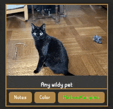
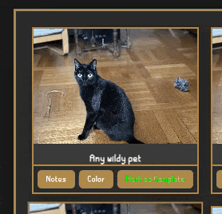
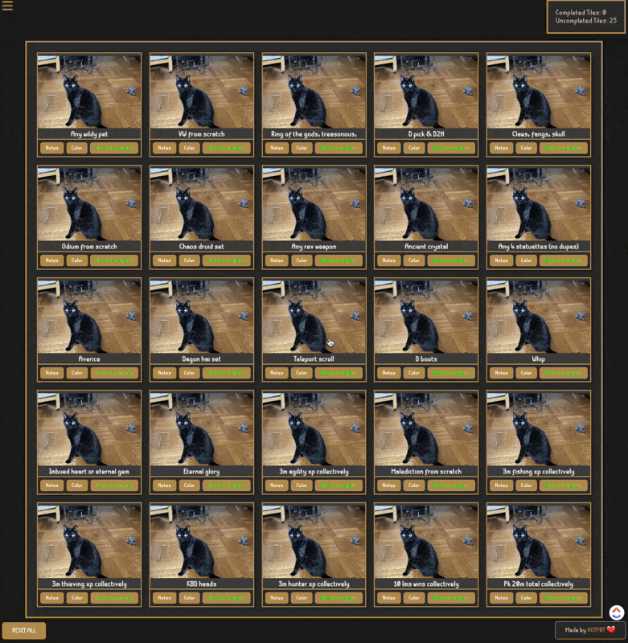

Help
Color Coding
You can click on the colors button to color code your tiles. For example: green is easy, purple is team mass, red is for Slaytr.

Mark as Complete
Click the "Mark as Complete" button to mark a tile as completed. This will update the tile's appearance and count in the scoreboard.
Notes
Click the "Notes" button to add notes to a tile. This allows you to keep track of important information for each tile.
Reset All
The "RESET ALL" button will reset all your progress and data. Use this if you want to start over.

Scoreboard
The scoreboard keeps track of your completed and uncompleted tiles. This helps you monitor your progress.

LightBox
You can change the viewing of the tiles by clicking on each one of them to focus on the selected tile.
